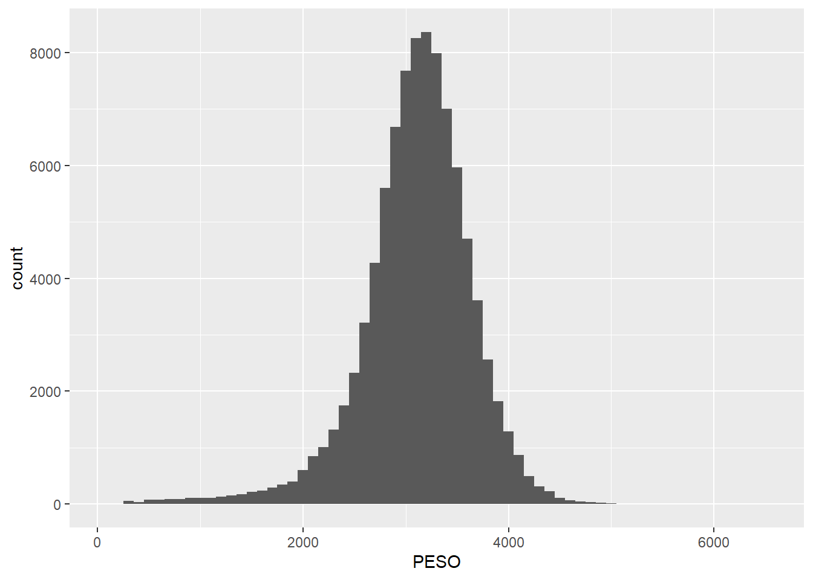
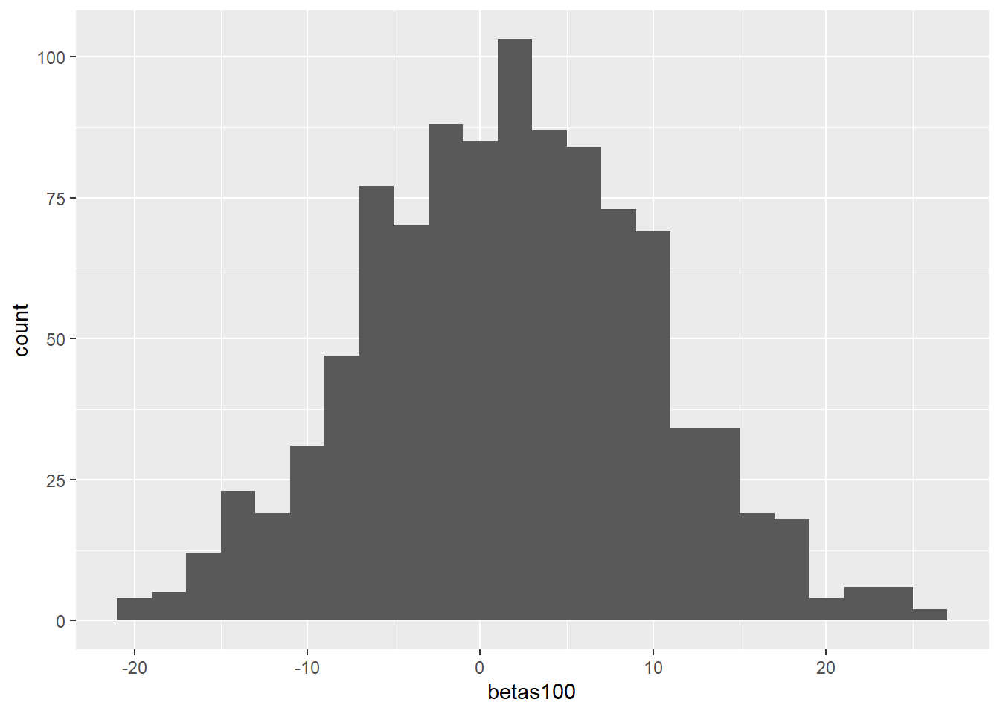
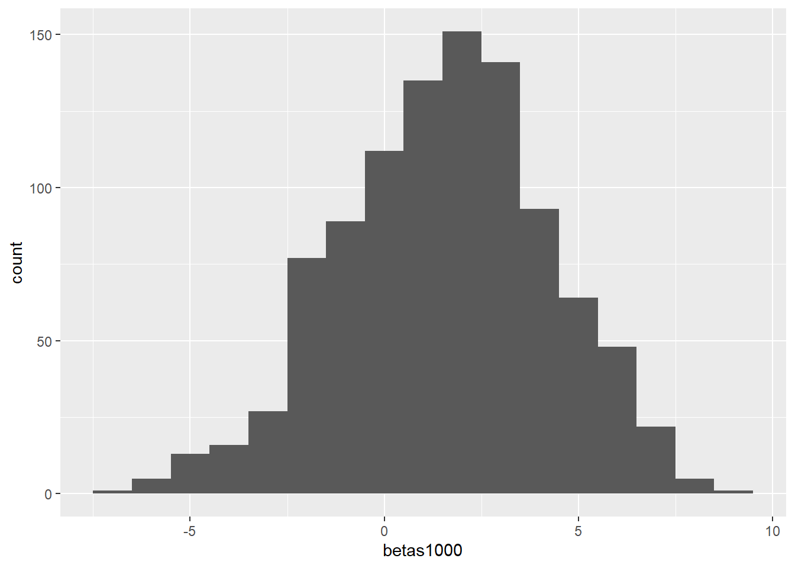
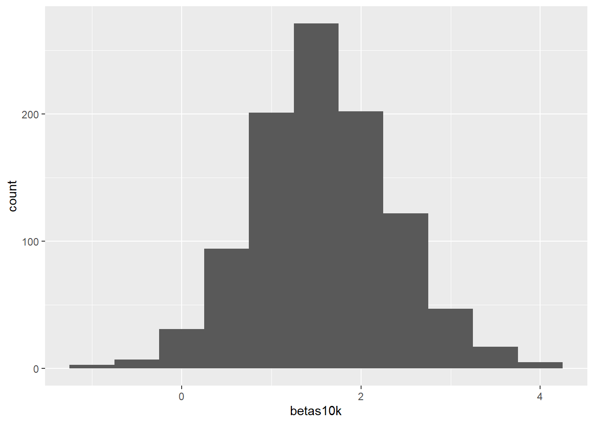
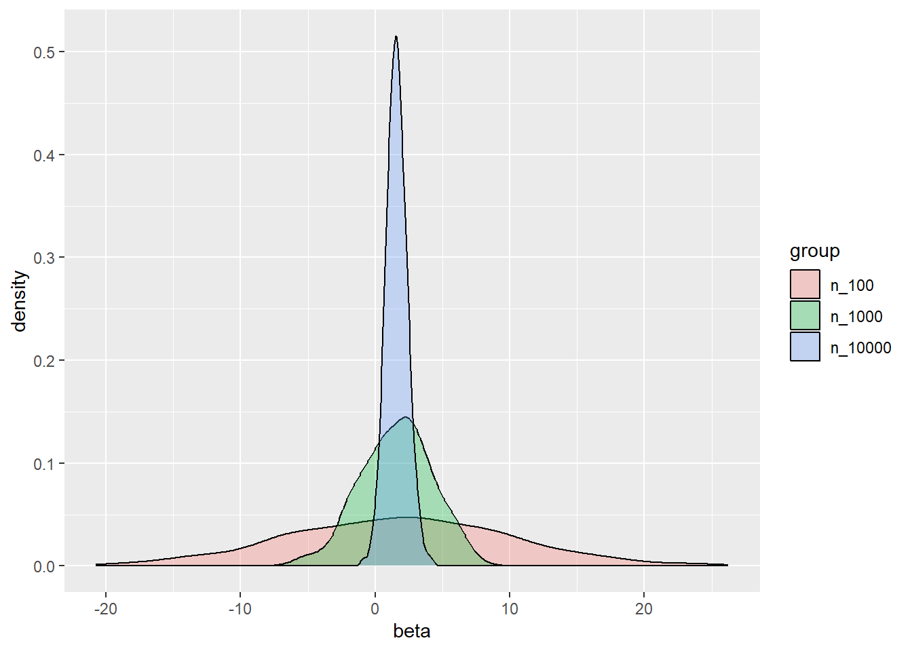

# instalando o pacote
# install.packages('remotes')
# remotes::install_github('rfsaldanha/microdatasus')
# carregando os pacotes
library(microdatasus)
library(dplyr)
library(ggplot2)
# lendo os dados
data <- fetch_datasus(
year_start = 2023, month_start = 1, year_end = 2023, month_end = 12,
information_system = "SINASC", uf = "GO"
)Resolução da lista 2
Curso de inferência causal
Parte 1 - Estatística descritiva
1. Preparação dos dados
Seleção das colunas necessárias, de acordo com a referência.
- PESO: Peso ao nascer, em gramas
- IDADEMAE: Idade da mãe em anos
- ESCMAE: Escolaridade da mãe (anos de estudo concluídos):
- 1: nenhuma
- 2: 1 a 3 anos
- 3: 4 a 7 anos
- 4: 8 a 11 anos
- 5: 12 e mais
- 9: ignorado
s_data <- data |>
select(PESO, IDADEMAE, ESCMAE) |>
mutate(
PESO = as.numeric(PESO),
IDADEMAE = as.numeric(IDADEMAE),
) |>
filter(!is.na(PESO)) |>
mutate(
ESCMAE = factor(
ESCMAE,
levels = c('1', '2', '3', '4', '5', '9'),
labels = c('Nenhuma', '1-3', '4-7', '8-11','12+', 'Ignorado')
)
)
glimpse(s_data)Rows: 91,822
Columns: 3
$ PESO <dbl> 3600, 2550, 1990, 3002, 4058, 3438, 2934, 3415, 2990, 3095, 2…
$ IDADEMAE <dbl> 29, 33, 33, 20, 18, 30, 16, 33, 25, 23, 26, 14, 23, 37, 32, 2…
$ ESCMAE <fct> 8-11, 8-11, 8-11, 8-11, 8-11, 8-11, 8-11, 8-11, 8-11, 8-11, 8…2. Média e variabilidade
media <- mean(s_data$PESO, na.rm = TRUE)
desvio <- sd(s_data$PESO, na.rm = TRUE)
n <- as.numeric(nrow(s_data))
ep <- desvio/sqrt(n)
media[1] 3109.578desvio[1] 540.5431ep[1] 1.783844O desvio padrão é a variabilidade da amostra, enquanto o erro padrão é a precisão da estimativa da média e depende do tamnho da amostra. Nesse caso, como temos um n grande, temos um erro padrão de menos de 2 gramas.
3. Intervalo de confiança
ic <- c(media - 1.96*ep, media + 1.96*ep)
ic[1] 3106.082 3113.074O intervalo de confiança de 95% significa que se a amostragem for repetida infinitas vezes, 95% dos intervalos construídos conterão o verdadeiro valor da média. Nesse caso, a média está entre 3106 e 3113 gramas com 95% de confiança.
4. Visualização
histograma <- s_data |>
ggplot() +
aes(x = PESO) +
geom_histogram(binwidth = 100)
histograma
Parte II - Regressão Linear
5. Regressão simples
modelo_linear <- lm(PESO ~ IDADEMAE, data = s_data)
summary(modelo_linear)
Call:
lm(formula = PESO ~ IDADEMAE, data = s_data)
Residuals:
Min 1Q Median 3Q Max
-2969.2 -267.0 39.6 332.0 3445.8
Coefficients:
Estimate Std. Error t value Pr(>|t|)
(Intercept) 3066.4309 7.7372 396.321 <2e-16 ***
IDADEMAE 1.5720 0.2743 5.731 1e-08 ***
---
Signif. codes: 0 '***' 0.001 '**' 0.01 '*' 0.05 '.' 0.1 ' ' 1
Residual standard error: 540.4 on 91820 degrees of freedom
Multiple R-squared: 0.0003576, Adjusted R-squared: 0.0003467
F-statistic: 32.84 on 1 and 91820 DF, p-value: 1.002e-08Significado dos coeficientes:
intercepto = 3066.43representa o valor da variável dependente (PESO) quando a variável independente (IDADEMAE) é 0. Não tem muito significado prático, pois a idade da mãe nunca será 0.beta = 1.57é a inclinação da reta, diz o quanto o incremento da variável independente impacta na variável dependente, ou seja, um aumento médio esperado de 1.57 gramas no peso do bebê para cada ano a mais na idade da mãe.
Um ponto importante, R2 é muito pequeno (R2 = 0.0003576), o que significa que a idade da mãe explica muito pouco (menos de 1%) o peso ao nascer.
6. \(\beta\) como estimador: variabilidade amostral
Estimando o \(\beta\) para subamostras de 100
betas100 = c()
for (i in 1:1000){
amostra <- s_data |> slice_sample(n=100)
modelo <- lm(PESO ~ IDADEMAE, data = amostra)
betas100 <- c(betas100, modelo$coefficients[[2]])
}
df100 <- data.frame(betas100)
df100 |> ggplot() + aes(x=betas100) + geom_histogram(binwidth = 2)
summary(df100) betas100
Min. :-20.755
1st Qu.: -3.881
Median : 1.762
Mean : 1.731
3rd Qu.: 7.378
Max. : 26.241 Para amostras de 100, o \(\beta\) varia de -28 a +30, numa distribuição normal de média 1.87.
Estimando o \(\beta\) para subamostras de 1000
betas1000 = c()
for (i in 1:1000){
amostra <- s_data |> slice_sample(n=1000)
modelo <- lm(PESO ~ IDADEMAE, data = amostra)
betas1000 <- c(betas1000, modelo$coefficients[[2]])
}
df1000 <- data.frame(betas1000)
df1000 |> ggplot() + aes(x=betas1000) + geom_histogram(binwidth = 1)
summary(df1000) betas1000
Min. :-7.0036
1st Qu.:-0.2667
Median : 1.6893
Mean : 1.5574
3rd Qu.: 3.3704
Max. : 8.9359 Para amostras de 1000, o \(\beta\) varia de -8 a +11, num distribuição normal de média 1.4.
Estimando o \(\beta\) para subamostras de 10000
betas10k = c()
for (i in 1:1000){
amostra <- s_data |> slice_sample(n=10000)
modelo <- lm(PESO ~ IDADEMAE, data = amostra)
betas10k <- c(betas10k, modelo$coefficients[[2]])
}
df10k <- data.frame(betas10k)
df10k |> ggplot() + aes(x=betas10k) + geom_histogram(binwidth = 0.5)
summary(df10k) betas10k
Min. :-1.006
1st Qu.: 1.047
Median : 1.574
Mean : 1.578
3rd Qu.: 2.091
Max. : 4.239 Para amostras de 10000, o beta varia de -1.2 a +4, num distribuição mais ou menos normal de média 1.59.
Comparando os experimentos
betas <- bind_rows(
data.frame(beta = betas100, group = 'n_100'),
data.frame(beta = betas1000, group = 'n_1000'),
data.frame(beta = betas10k, group = 'n_10000'),
)
betas |>
ggplot() +
aes(x = beta, fill = group) +
geom_density(alpha = 0.3)
- Os valores estimados para \(\beta\) são diferentes entre cada amostra, visto que a estimação depende da amsotra selecionada
- A medida que o tamanho da amostra aumenta, a dispersão dos valores de \(\beta\) diminui
- Esse comportamento demonstra exatamente a relação do erro padrão com o tamanho amostral, quanto maior a amostra, menor o erro
- A confiabilidade de coeficiente estimado em regressão está fortemente ligado à amostra e ao seu tamanho
7. Regressão com controle
modelo_multiplo <- lm(PESO ~ IDADEMAE + ESCMAE, data = s_data)
summary(modelo_multiplo)
Call:
lm(formula = PESO ~ IDADEMAE + ESCMAE, data = s_data)
Residuals:
Min 1Q Median 3Q Max
-2963.9 -267.3 39.6 332.5 3451.5
Coefficients:
Estimate Std. Error t value Pr(>|t|)
(Intercept) 2808.447 69.257 40.551 < 2e-16 ***
IDADEMAE 1.867 0.290 6.438 1.21e-10 ***
ESCMAE1-3 192.011 73.090 2.627 0.008614 **
ESCMAE4-7 199.030 68.945 2.887 0.003893 **
ESCMAE8-11 258.455 68.657 3.764 0.000167 ***
ESCMAE12+ 245.254 68.675 3.571 0.000355 ***
ESCMAEIgnorado 135.675 93.897 1.445 0.148481
---
Signif. codes: 0 '***' 0.001 '**' 0.01 '*' 0.05 '.' 0.1 ' ' 1
Residual standard error: 540.1 on 91778 degrees of freedom
(37 observations deleted due to missingness)
Multiple R-squared: 0.001376, Adjusted R-squared: 0.001311
F-statistic: 21.08 on 6 and 91778 DF, p-value: < 2.2e-16Os betas relacionados à escolaridade são bem maiores, mostrando que o impacto de mais anos de escolaridade é maior no peso do que a idade da mãe. O R2 aumentou, mostrando que o novo modelo tem um maior poder de explicar o peso ao nascer, porém ainda é bastante baixo.
8. Interpretação econômica
Provavelmente, mães com mais escolaridade possuem renda maior e maior acesso a alimentos de boa qualidade, o que impacta o peso ao nascer.
Parte III - Ligando com casualidade
9. Associação vs causalidade
Não é possível estimar os coeficientes como causais, pois existem muitas variávies omitidas.
10. Contrafactual
O contrafactual para a influência da idade da mãe no peso do bebê seria o peso do mesmo bebê para a mãe com idades diferentes.